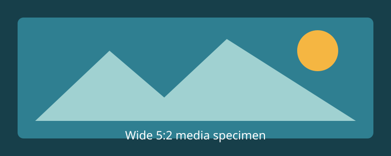

A deliberately long description proves the desktop reveal and constrained-width clamp without widening the card or erasing the body role’s own baseline compensation.
A rich card family for articles and resources. Its main title link expands over the quiet surface while author and footer links keep independent keyboard and pointer targets.

A deliberately long description proves the desktop reveal and constrained-width clamp without widening the card or erasing the body role’s own baseline compensation.
The image and content form Vanilla’s horizontal relationship when the card itself has enough allocated room.
Six-column descriptions retain the concise two-line reveal used by the source pattern.
Unlike the smaller variants, the feature description remains visible beneath its heading. Long copy clamps without changing the intended image, body, and footer relationship.